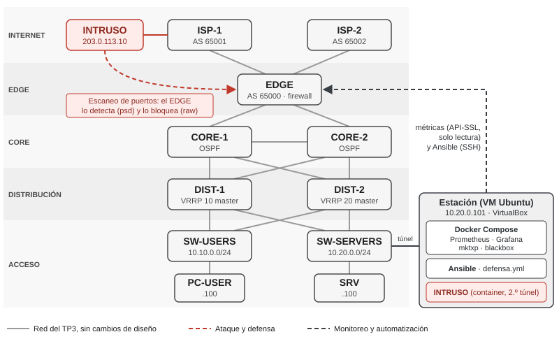
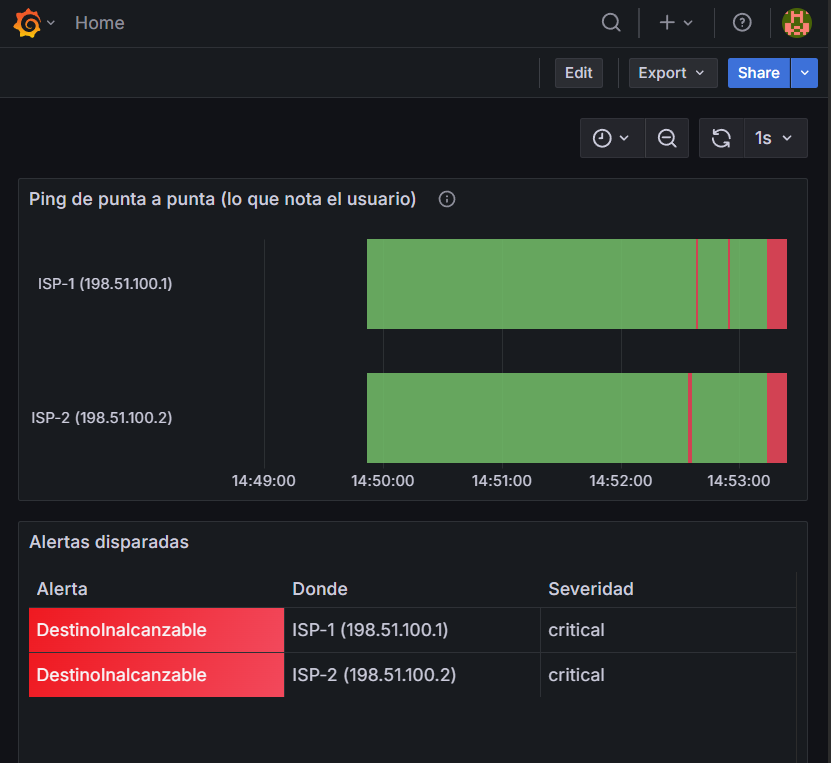
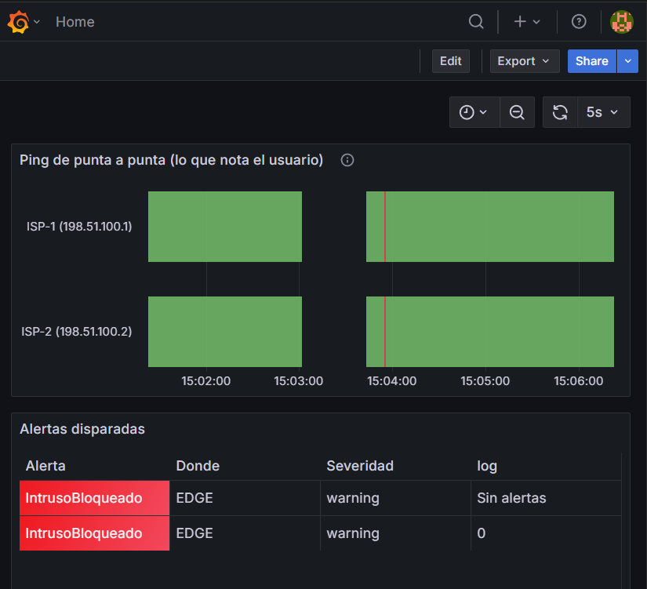

Documento final · Modalidad A: Proyecto de Desarrollo · Feria de Redes 2026
Failover automático y bloqueo de intrusiones sobre una red empresarial MikroTik, con Ansible y Prometheus/Grafana
Lautaro Aubert · Juan Bautista Cuenca · Tomás Martin · Santiago Natalichio Bestosini
Grupo 11 · Ingeniería en Sistemas de Información · UTN Facultad Regional La Plata · Repositorio: github.com/Sanntinat/goys-tp4-integrador
Resumen. La red empresarial del TP3, con siete routers MikroTik CHR, ya se recuperaba sola de la caída de un gateway, de un enlace o de un proveedor [1], pero nadie se enteraba de una falla mientras pasaba y el firewall no distinguía a un atacante del resto del tráfico. Le agregamos un tablero en tiempo real con alertas (Prometheus, Grafana, mktxp y blackbox exporter en Docker), una defensa en el router de borde que detecta un escaneo de puertos y bloquea al origen por sí sola, y el despliegue de esa defensa con Ansible. En el laboratorio, el corte de un enlace interno se ve en el tablero y la red vuelve en 1 a 10 s; un escaneo de puertos queda bloqueado entre 0,08 y 2,72 s después de empezar, el bloqueo dura unos 2 minutos y no afecta BGP, OSPF ni el monitoreo. La defensa no ve los escaneos que dejan más de 3 s entre intentos.
Palabras clave: alta disponibilidad, monitoreo, detección de escaneos, MikroTik RouterOS, Prometheus, Ansible.

En el TP3 armamos en GNS3 una red jerárquica de cinco capas con dos proveedores, routers duplicados y protocolos de redundancia, y medimos con cinco simulacros que sobrevive a fallas sin intervención [1]. Esos simulacros dejaron dos puntos ciegos. El primero es de operación: el único monitoreo escribía en el log de un router, y un reinicio de CORE-2 se notó horas después. El segundo es de seguridad: el firewall del borde aplica una política fija, que descarta lo no permitido pero no reacciona ante alguien que está tanteando la red.
El objetivo fue que la red, además de recuperarse, avise y se defienda, y medirlo: cuánto tarda en recuperarse de una falla y cuánto en neutralizar un ataque. El trabajo se organizó en siete hitos (H1 a H7), cada uno con un responsable, una rama y un pull request revisado por otro integrante.
La topología del TP3 se mantuvo sin cambios de diseño: eBGP con dos proveedores y TCP-MD5 [2], [3], OSPF área 0 con MD5 [4], VRRP con autenticación y un master por LAN [5], y el firewall del EDGE. Sobre ella se agregaron la estación de monitoreo, el atacante y las reglas de defensa (Figura 1 y Tabla 1).
| Componente | Implementación | Dónde corre |
|---|---|---|
| Laboratorio | GNS3 2.2.61 y 7 MikroTik CHR (RouterOS 7.21.5) | Laptop, emulado con QEMU |
| Estación | VM Ubuntu Server 24.04 con Docker (10.20.0.101) | VirtualBox, unida a SW-SERVERS por un túnel UDP |
| Monitoreo | Prometheus, Grafana, mktxp 1.2.20 [6] y blackbox exporter [7], [8] | Docker Compose en la estación |
| Defensa | Detector psd, lista de direcciones y tabla raw [9] | Firewall del EDGE |
| Automatización | Ansible 9 con community.routeros [10] | Estación |
| Atacante | Alpine 3.20 con nmap 7.95 [11] (203.0.113.10) | Container en la estación, unido a ISP-1 por un segundo túnel UDP |
Decisiones que cambiaron la propuesta. El repositorio registra 20 decisiones con su contexto, alternativas y evidencia. Las que más pesaron fueron de plataforma. La estación iba a ser la laptop conectada a GNS3 con un nodo Cloud, pero en Windows 11 el tráfico que Npcap inyecta en una placa de loopback se descarta: quedó como una VM unida por un túnel UDP, el mecanismo que GNS3 usa por dentro (D-05, D-06). El atacante iba a ser otra máquina; quedó como un container de la misma VM, colgado de una tercera placa con su propio túnel hacia ISP-1, que no suma RAM (D-16). Y al replicar el laboratorio en otra PC apareció un choque de puertos: el servicio de la app de NVIDIA ocupa el UDP 10030 y se quedaba con el tráfico de un cable de GNS3, lo que se resolvió moviendo el rango de puertos de GNS3 a 20000–30000 (D-17).
En los cinco routers de la empresa se creó un usuario prometheus con permisos de solo lectura y API, que solo puede entrar desde la estación, y se habilitó la API-SSL con un certificado firmado por una CA local de cada router (D-13). mktxp consulta cada 5 s las interfaces, los contadores del firewall, la lista de bloqueados y las sesiones BGP (D-14). El blackbox exporter hace un ping por segundo a los loopbacks de los proveedores: es la medida de lo que percibe un usuario, que complementa las métricas internas [12]. El intervalo de 1 s se eligió porque en el TP3 las fallas más cortas duraron entre 2 y 4 s. Grafana muestra ocho paneles y Prometheus evalúa las alertas de la Tabla 2.
| Alerta | Condición | Espera | Severidad |
|---|---|---|---|
| DestinoInalcanzable | El ping de punta a punta a un proveedor no vuelve | 2 s | crítica |
| EnlaceCaido | Una placa física de los cinco routers deja de estar activa | 2 s | advertencia |
| SesionBGPCaida | Una sesión BGP del EDGE no está establecida | 5 s | crítica |
| IntrusoBloqueado | La defensa descarta tráfico o hay direcciones en la lista de bloqueados | 0 s | advertencia |
En el EDGE se agregaron dos reglas y una lista de confianza. La detección (psd=21,3s,3,1) va en la cadena input, justo antes de la regla final del TP3 que descarta todo lo no permitido: suma 3 puntos por cada puerto bajo y 1 por cada puerto alto que intenta un mismo origen, y si llega a 21 lo agrega a la lista bloqueados por 2 minutos y deja una línea en el log. El bloqueo, en la tabla raw, descarta todo lo que llega de esa lista antes del seguimiento de conexiones, así el ataque no consume recursos del router. Los dos proveedores y la estación están en la lista de confianza, para que un falso positivo no corte BGP ni el monitoreo (D-19).
Las pruebas obligaron a corregir cómo explicábamos la regla. Los 3 s no son una ventana dentro de la cual hay que probar muchos puertos, sino la pausa máxima entre un intento y el siguiente: mientras el atacante no espere más de eso, los puntos se acumulan, vaya rápido o lento (D-18).
defensa.yml entra al EDGE por SSH, lee primero cómo está (posición de la detección, cada regla y la lista de confianza) y después manda solo las órdenes que faltan, por lo que una segunda corrida no cambia nada. defensa-quitar.yml borra la defensa y vacía la lista de bloqueados, y es el reinicio de la demo entre visitantes. La clave de admin va cifrada con Ansible Vault y la huella del EDGE se verifica (D-20).
Cada hito tiene un runbook para reproducirlo desde cero, capturas firmadas por quien hizo la prueba y su registro en la bitácora. Las claves están solo en los routers, en una base de KeePassXC compartida y en Ansible Vault; en el repositorio van marcadores. Las imágenes de Docker están fijadas por versión y se descargan de antemano, porque la feria es sin Internet (D-08).
La Tabla 3 compara los tiempos del TP3, medidos contando pings perdidos, con los que se leen ahora del tablero. La diferencia entre el laboratorio de H3 y la laptop de la feria, en la misma falla, la atribuimos a la carga: la laptop tiene 7,4 GB de RAM y corre los siete routers emulados más la estación.
| Falla | Medición | Tiempo |
|---|---|---|
| Cae la placa LAN del master VRRP | TP3, ping manual | 4 a 16 s |
| Se corta un enlace interno (OSPF): interfaz caída / corte silencioso | TP3, ping manual | 2 s / 35 s |
| Se cae un proveedor (eBGP): interfaz caída / corte silencioso | TP3, ping manual | 2 s / 160 s |
| Corte del enlace EDGE–CORE-1 | Tablero, laboratorio de H3 | ~1 s |
| Corte del enlace EDGE–CORE-1 | Tablero, laptop de la feria | ~10 s |
Se apaga ISP-2: aviso de DestinoInalcanzable / de SesionBGPCaida | Tablero, laboratorio de H3 | 2 s / ~3 min |
El último caso muestra por qué conviene combinar las dos fuentes. El ping avisa la caída de un proveedor en 2 s, mientras que la sesión BGP sigue establecida hasta que vence su temporizador de 180 s (D-15).
Un script corre dentro del intruso un ping al EDGE cada 0,1 s y lanza el escaneo de la demo (nmap SYN a los 100 puertos más comunes). El tiempo de neutralización va desde que arranca nmap hasta el primer ping sin respuesta, y la duración del bloqueo, hasta que el ping vuelve (Tabla 4).
| Laboratorio | Neutralización | Duración del bloqueo (configurado: 120 s) |
|---|---|---|
| PC de Tomás (15,6 GB de RAM) | 0,08 s · 0,09 s · 0,18 s | 121 s · 124 s · 125 s, y una corrida de 237 s sin causa confirmada |
| Laptop de la feria (7,4 GB de RAM) | 0,24 s · 0,66 s · 2,72 s | 124 s · 130 s · 130 s |
Las reglas son las mismas en las dos máquinas; la diferencia de tiempos la atribuimos a la carga de la laptop. nmap termina igual, en unos 11 s y con los 100 puertos filtrados, porque sin la defensa el firewall del TP3 ya los descartaba: el bloqueo se ve en el ping del intruso, en la lista bloqueados y en la alerta IntrusoBloqueado (Figura 2).

(a) Corte de un enlace interno
(b) Bloqueo del intrusoDestinoInalcanzable; en (b), salta IntrusoBloqueado mientras el EDGE bloquea al intruso.| Prueba | Resultado |
|---|---|
| Escaneo de un puerto por segundo | Bloqueado a los 20 s: la pausa (1 s) es menor que 3 s y los puntos se acumulan |
| Escaneo de un puerto cada 4 s | No se detecta: 15 puertos en 64 s, sin bloqueo. Es el límite de la defensa |
| Escaneo desde la estación | No se bloquea (lista de confianza) y la estación sigue llegando al EDGE |
| Durante un bloqueo | Las dos sesiones BGP siguen establecidas sin reiniciarse, los vecinos OSPF en Full, los hosts llegan a los dos proveedores y el monitoreo sigue arriba |
| Del intruso a las LAN | Sin acceso: lo frena la regla forward del TP3, que no deja pasar conexiones nuevas desde los proveedores |
| API-SSL desde otra dirección | Rechazada: el servicio, el usuario y el firewall del EDGE solo aceptan a la estación |
Segunda corrida de defensa.yml | changed=0; también corrige un cambio hecho a mano y frena si falta la regla del TP3 |
La defensa solo ve los escaneos dirigidos al EDGE desde afuera: un equipo comprometido dentro de la red no pasa por esa regla, porque el tráfico entre las LAN lo rutean los routers de distribución, que no tienen firewall. Tampoco detecta escaneos con pausas mayores a 3 s, escaneos UDP ni ataques de fuerza bruta, que requieren un sistema de detección de intrusiones con firmas [13]. Los playbooks se probaron contra un CHR aislado; la corrida en el laboratorio completo, con BGP y el intruso, queda para el ensayo general (H7). La laptop de la feria trabaja al límite de memoria, a lo que atribuimos los tiempos más altos de la Tabla 4, y la corrida de 237 s no se pudo reproducir. Como trabajo futuro quedan aplicar la detección en la cadena forward de los routers de distribución, BFD para detectar en segundos los cortes silenciosos de BGP [14], NTP en los routers y un usuario de Ansible propio.
La red del TP3 pasó de recuperarse sola a avisar y defenderse sola. El tablero muestra cada falla en segundos y distingue lo que nota el usuario de lo que pasa adentro, y un escaneo de puertos queda bloqueado en menos de 3 s sin tocar el enrutamiento. Medir antes de afirmar cambió dos cosas que dábamos por sabidas: cómo funciona el detector de RouterOS y cuánto dura el bloqueo en una máquina cargada. Los problemas más difíciles no fueron de redes sino de plataforma (Npcap, el puerto de NVIDIA, la memoria de la laptop), y quedaron resueltos y documentados como decisiones. Trabajar por hitos, cada uno con su rama, su revisión y su runbook, permitió repartir el trabajo entre los cuatro y replicar el laboratorio en más de una máquina.